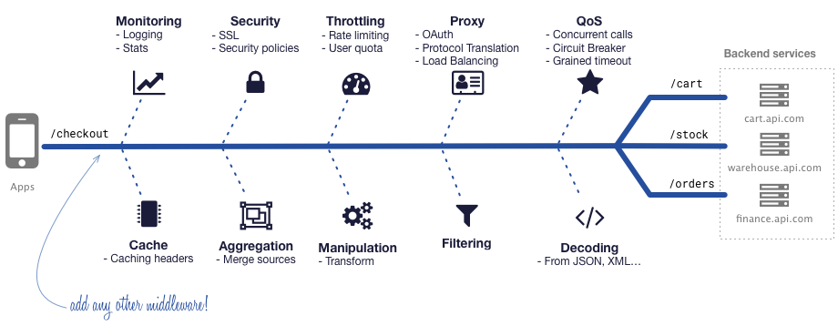
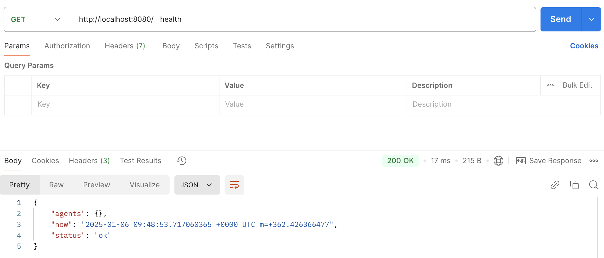
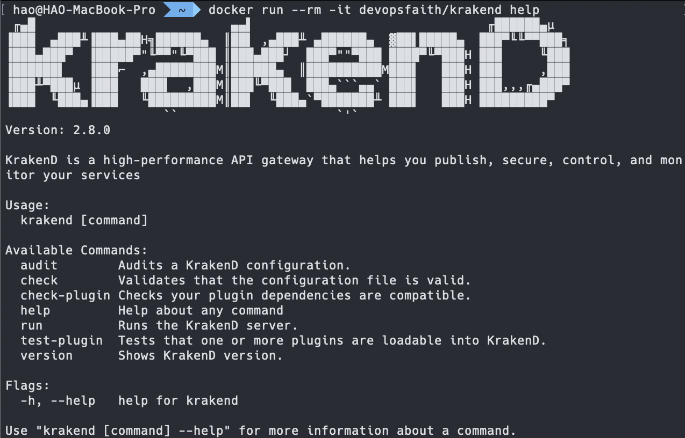
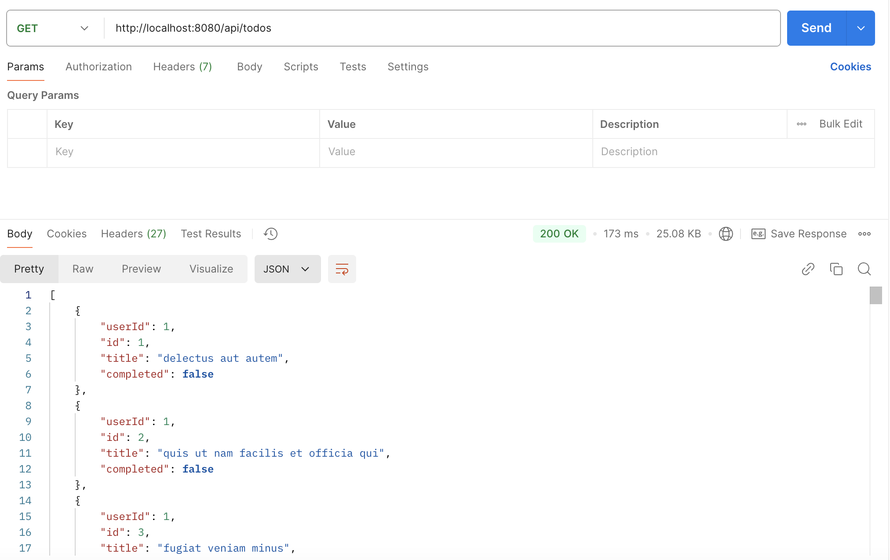

KrakenD 簡介
什麼是 KrakenD？
KrakenD 是一套開源、可擴充、高效能的 API Gateway，使用 Golang 所撰寫，透過 JSON 設定檔即可聚合多個微服務到單一 Endpoint，並能夠運用內建或社群提供的 中介軟體(Middleware) 來擴展其功能，自動完成部分繁重的工作，如：聚合(Aggregate)、轉換(Transform)、過濾(Filter)、解碼(Decode)、節流(Throttle)、身份驗證(Authenticate) 等。

安裝 KrakenD
KrakenD 有提供多種安裝方式，其中 Docker Image 的方式是最快、最容易的。透過下方指令即可將 KrakenD 的 Docker Image 從 Docker Hub 下載下來：
1 | $ docker pull devopsfaith/krakend |
使用下方指令即可快速啟動 KrakenD：
1 | $ docker run -p 8080:8080 devopsfaith/krakend |
啟動後，可以透過 GET 方法存取 http://localhost:8080/__health 來取得 KrakenD 的健康狀態，如果有收到下方回應就表示啟動成功：

這時可能會有些疑問，前面提到 KrakenD 是透過 JSON 設定檔來建立 Endpoint 的，但剛剛的步驟中沒有撰寫到任何的 JSON 卻可以順利啟動 KrakenD？原因是 KrakenD 預設狀況下會去讀取 /etc/krakend 路徑下的 krakend.json，當我們沒有透過 Docker Volume 的方式將實體主機上檔案 mapping 到 container 內部時，預設會使用最基礎的 krakend.json 來啟動 KrakenD。
認識 KrakenD 指令
上述快速啟動 KrakenD 的方式，其實是該 Image 預設會執行 KrakenD 的 run 指令，那麼我們要如何完整的使用 KrakenD 所提供的指令與參數呢？我們可以透過下方指令執行 help 來查看 KrakenD 提供了哪些指令與參數：
1 | $ docker run --rm -it devopsfaith/krakend help |

從上圖可以看到共有以下幾個指令：
audit：檢查設定檔是否存在安全性風險。check：檢查設定檔的格式、屬性等是合法的。check-plugin：如果有自訂 插件(Plugin) 的話，可以透過這個指令來檢查是否與 KrakenD 相容。help：查看 KrakenD 提供了哪些指令與參數。run：啟動服務。test-plugin：測試 Plugin 是否能夠被 KrakenD 載入。version：顯示 KrakenD 版本以及編譯時使用的 Glibc 與 Golang 版本。
NOTE：上述指令中，大部分都需要更深入了解 KrakenD 才能理解其用途，之後介紹到相對應的功能時，會做更詳細的說明。
認識設定檔
前面有提到 KrakenD 會需要 krakend.json 才能啟動，這個設定檔最簡單的設置如下：
1 | { |
version 表示 設定檔的版本，與 KrakenD 版本不同，但每個設定檔版本都有 KrakenD 支援的版本區間：
3：目前最新版本，只要 KrakenD 在v2.0以上就可以使用。2：在 2022 時棄用，KrakenD 版本在v0.4到v1.4.1時使用。1：在 2016 時棄用，KrakenD 版本在v0.3.9以下時使用。
實務上，我們不會只有一個 version 在設定檔內，這樣啟動後的 KrakenD 也沒有發揮 API Gateway 的功能。一個設定檔的主要結構如下：
1 | { |
上方可以看到多了三個屬性：
$schema：套用 KrakenD 提供的 JSON Schema，這樣可以與編輯器做整合，在撰寫該設定檔時，能夠有更多的提示訊息。此項目雖然不是必要的，但非常建議添加。endpoints：定義 API 的設定。extra_config：擴展 KrakenD 的元件設定。
endpoints 基礎介紹
endpoints 可說是 KrakenD 最重要的設定，因為它會用來定義 KrakenD 要提供哪些 API 給使用者以及該 API 背後對應的服務是哪些。endpoints 內每個物件都是一個 API 的定義，下方是一個代理 Todo API 的設定：
1 | { |
上方的設定表示會代理 https://jsonplaceholder.typicode.com/todos 這個 API，使用者只需要用 GET 方法存取 http://localhost:8080/api/todos 即可獲得該 API 的結果。
extra_config 基礎介紹
extra_config 主要是負責針對各式 Plugin 進行設定，每個 Plugin 都會有一個獨一無二的 命名空間(Namespace)，KrakenD 會在啟動時註冊 Plugin 並從 extra_config 找出對應名稱的設定，再將該設定內容傳遞給 Plugin。下方是擴展 Log 的 extra_config 設定：
1 | { |
NOTE：有關
telemetry/logging的介紹後續有機會再跟大家分享。
extra_config 不僅可以出現在設定檔的根層級，也可以出現在其他層級，放的層級越深，作用的範圍就越小，而實際放置位置取決於 Plugin 的用途與性質。下方是 extra_config 可以設置的層級：
service：服務層級，也就是與endpoints相同層級的位置。這個層級會影響整個 KrakenD 以及所有請求。endpoint：Endpoint 層級，指的是endpoints中的物件。影響範圍僅限於該 API Endpoint。backend：Backend 層級，指的是backends中的物件。影響範圍僅限於該 Backend。
小品練習
首先，建立一個資料夾 src 並同時在該資料夾下新增 krakend.json：
1 | { |
接著，透過下方指令以 Docker Volume 的方式將 src 資料夾 mapping 至 /etc/krakend，同時透過 -c 參數指定使用 krakend.json 作為設定檔：
1 | $ docker run -p 8080:8080 -v $PWD/src:/etc/krakend devopsfaith/krakend run -c krakend.json |
透過 Postman 以 GET 方法存取 http://localhost:8080/api/todos，可以順利拿到來自 https://jsonplaceholder.typicode.com/todos 的資料：

結論
今天簡單介紹了 KrakenD 以及啟動的方式，對於設定檔也有了初步的了解。後續會再針對設定檔的細節做更詳細的解說。